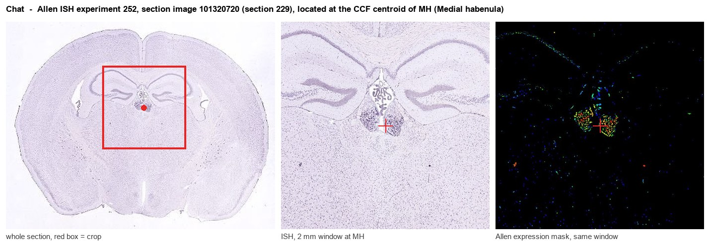

Chat
Spatial tier: STRICT_EXCLUSIVE · Class: NEUROMODULATORY_SIGNAL · Top region: MH (Medial habenula) · Positive regions: 8/554
50.7Discovery Score
45.4Targetability Score
CEvidence grade C
What this means: Chat: predicted fine-region profile is strict-exclusive, with 8 positive regions out of 554 (limit 12); direct spatial validation is required.
Function in MH: evidence, prediction, innovation
- Gene function
- Choline acetyltransferase is the cytoplasmic enzyme that transfers an acetyl group from acetyl-CoA to choline to make acetylcholine; it is the rate-defining and definitive marker of cholinergic neurons. The acetylcholine it produces is loaded into vesicles by VAChT and released to act on nicotinic and muscarinic receptors.
- Region function
- The medial habenula is an epithalamic relay whose cholinergic/substance P neurons project almost exclusively through the fasciculus retroflexus to the interpeduncular nucleus. This MHb-IPN axis sets nicotine aversion and withdrawal, fear memory expression, anxiety and negative affect.
- Published in this region
- direct Ren et al. 2011 (Neuron) showed with ChAT-ChR2 optogenetics that ventral MHb 'cholinergic' neurons co-release glutamate and acetylcholine onto IPN neurons using distinct fast and slow transmission modes. Frahm et al. 2015 (eLife) demonstrated that acetylcholine-glutamate synergy at these habenular synapses is essential for nicotine dependence, and Souter et al. 2022 (eNeuro) showed that deleting VGLUT1 from ChAT+ MHb projections increases nicotine self-administration. Zhang et al. 2016 (Cell) used the same ChAT+ MHb population to control fear memory expression.
- Predicted function
- Prediction: ChAT sets the acetylcholine component of the dual ACh/glutamate signal that MHb neurons deliver to the IPN, so conditional Chat deletion in MHb should spare fast glutamatergic transmission but abolish the slow nicotinic component, reducing nicotine aversion and withdrawal signs while leaving basal fear expression partly intact. Chemogenetic silencing of ChAT+ MHb neurons is predicted to reduce anxiety and nicotine avoidance.
- Innovation
- ★☆☆☆☆ 1/5 ChAT+ MHb neurons are one of the most intensively studied cell populations in the addiction field.
- Tools
- ChAT-IRES-Cre (JAX 006410), ChAT-ChR2-EYFP BAC transgenic (JAX 014546), ChAT-eGFP GENSAT lines, floxed Chat alleles; goat anti-ChAT antibody AB144P; VAChT inhibitor vesamicol.
- References
Direct evidence located at the region

Allen ISH experiment 252, section image 101320720 (section 229): the section that contains the CCF centroid of Medial habenula according to the Allen image-to-atlas alignment (reference_to_image), with a 2 mm window around that point. Left: whole section, red box = window. Middle: ISH signal. Right: Allen's expression-mask view of the same window. open this image in the Allen viewer
Look it up yourself: Allen Mouse Brain ISH for ChatAllen reference atlas: MH (structure 483)ABC Atlas MERFISH viewer(in the ABC Atlas choose dataset MERFISH-C57BL6J-638850-CCF, colour cells by gene "Chat" or by parcellation_substructure "MH")All genes confined to MH + 3-D brain
Direct spatial evidence
MERFISH REGION LOCATOR

DIRECT ALLEN ISH

DIRECT ALLEN ISH

Regional expression figure

Predicted WMB × fine-CCF profile; not direct full-transcriptome spatial measurement.
Spatial profile
Evidence and specificity
- Evidence status
- PREDICTED_FINE
- Direct sources
- None; predicted localization only
- Exclusive threshold
- 12 positive regions out of 554
- Spatial specificity
- 0.440
- Top-region fraction
- 0.140
- Filter status
- PASS
Interpretation limits
- Cell-type-to-region projection is imputed expression, not direct spatial measurement.
- Adult reference atlases do not establish stability across age, sex, strain, state, or disease.
- Transcript abundance does not guarantee protein abundance or genetic-tool performance.